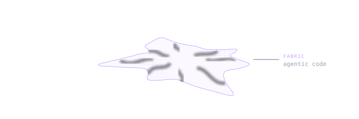
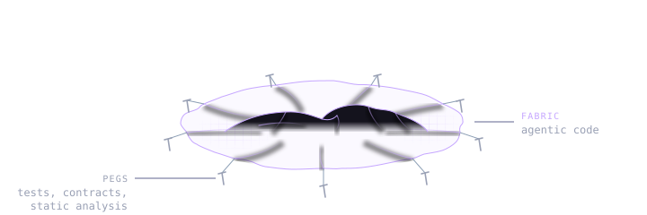
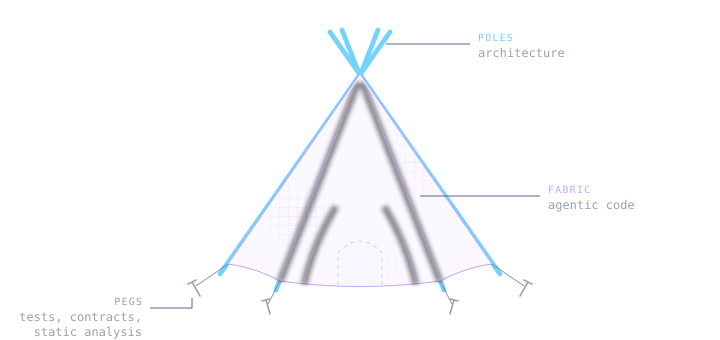

The art of not writing all the code
Agentic code can be thought of as a fabric. It is easily shaped and can assume any form with little effort, but it is hard to build something rigid out of it. While agents can produce brilliant snippets of code on par with the cutting edge of human knowledge, cohesion and consistency remain a challenge.

The peg fallacy
There is a real problem with the softness of fabric alone. There is a natural inclination to address the lack of structure in agentic workflows by adding tests, contracts and static analysis. However, pinning down the edges with pegs does little to enforce internal structural rigidity. Without an internal structure to apply the constraining forces upon we are still in a soft, flat mess.

Building a tipi
We'd be helped by sturdy poles to stretch the fabric into its desired shape. In software terms - a distinct architecture by which all additional work is guided and which the tests and static analysis apply constraining forces upon. In tents, there is a symbiotic relationship between the internal structure, the fabric and the pegs. Software is much the same. Without an architecture to stretch the web of features across, the constraining pegs are of little use. Without the pegs, on the other hand, we might wake up in the morning with all of the wooden structure in place, but all of the fabric in a tree top far away.

That's the theory. Stick around for the case study!
A thousand doubts
Epiq (a distributed issue tracker) was fortunate to receive its internal poles of architectural principles before it was layered with fabric.
In the early summer of 2025, when the first lines of Epiq were written, agentic workflows were but distant rumors. Hence, manual struggle with the code, endless rubber ducking sessions, and 12h meditation sessions (road-trips) charred Epiq's constraint-driven architecture in the fire of a thousand doubts.
Trees in the forest of ideas were selected, pruned of false branches. Then logged, pruned again, sharpened at the end, and finally tightly tied together. Eventually, a few non-negotiable architectural poles emerged:
- User-scoped, append only event logs
- Events with CRDT-like properties, only referencing shared history
- Causal order resolution, with wall-clock tie breaks
Upon these rests every future feature.
Constraints over slop
None of these is exotic on its own, but together they are not a mainstream solution, and anything unorthodox is punished by probabilistic models. It seems unlikely that an unguided agentic workflow would have landed in these fundamentals. The solution becomes more likely when revealing the constraints:
- The board lives in the repo with the code (no server, vendor-agnostic)
- Git is the only transport
- Never ask users to resolve merge conflicts
- Several people, and agents, edit at the same time, on- or offline
Agents tend to not discover non-standard solutions when not guided by constraints. Constraints are derived from a vision. This highlights the need for a vision.
Agents lacking a vision for the codebase is why if you ask for a red button, and then for a blue button, you might get two different buttons rather than a single configurable button. The fundamental principles of a system benefit from being derived from a human vision.
A blessing in disguise
The initial absence of agentic workflows made for manually crafted, well understood poles. Now, once the poles were in place in the late summer of 2026, Epiq experienced the fortunate event of a fabric factory opening its gates 1 meter away. Enter Claude Code. Had Claude Code been introduced any earlier, it might have been to the detriment of the architecture. As it stands, Claude entered at the precise moment when a fabric of features had a frame to stretch across. Suddenly not only features were cheap, but tests also. You could add a thousand tent pegs for a single pole, firmly pinning it to the ground.
The core of Epiq is sprinkled with paranoid tests. There is a whole suite of tests trying to break the concurrency model, tests attempting to break the Git interactions, and there is a test simulating a team of 20 using Epiq intensely every day for 10 years, verifying the board is still usable and responsive.
The great inversion
There is a common denominator between all of Epiq's foundational poles. They are all concerned with the data model.
A common notion is that data is soft and software is rigid. Agentic workflows have challenged, one might even say, inverted, this perceived relationship. What has not changed, however, is the cementing effect data has on a system. Data comes with migrations, uncharted sources, varying quality, risky transformations, all of which are petrifying to system evolution.
Picking the right data model is not an afterthought, but a core feature of the architecture. A pole to stretch the soft tissue of code across, nailed to the ground with tests.
Epiq's data model has proven not only essential for solving distributed live collaboration, but also resulted in an evolvable system. So far all new features have been added by simply deriving information from the logs in a new way or adding another event type, not by migrating existing data structures. When image attachments were added, for instance, all it took was to introduce another event type, which the newer clients recognized, and the older ones ignored.
Not all systems live under the same constraints. For Epiq's use case this particular model has proven extendable. Other products with other visions would be subject to other constraints. In any case, the art of not writing all the code is knowing which parts you must write yourself.
Back to the tipi
There is still a need for manual crafting and human understanding of the central principles of a system. Agentic workflows can help us wrap up our framing in beautiful ornaments in no time and help us pin it firmly to the ground with a thousand pegs. However, without sturdy poles of architecture, we have nothing but a fabric pancake. Ornate, but flat, wet and tangled.
Does this resonate with you, or do you disagree? Please share your thoughts below.